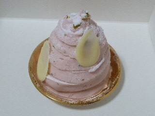
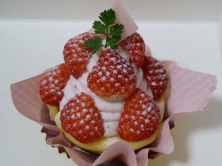
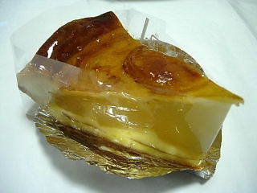
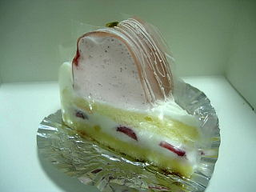
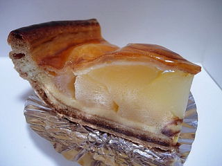

ジョリカドーのさくらのモンブラン
2011/03/26
春らしい商品ですね。

さくらのモンブランです。モンブランらしく、中には栗が入っていました。
さくら風味なので、すこし和菓子っぽい感じがしました。

こっちは苺のタルトです。見た目が可愛いですね。
苺のクリームが美味しかったです。
島根県出雲市天神町233-28
2011/03/26
春らしい商品ですね。

さくらのモンブランです。モンブランらしく、中には栗が入っていました。
さくら風味なので、すこし和菓子っぽい感じがしました。

こっちは苺のタルトです。見た目が可愛いですね。
苺のクリームが美味しかったです。
2009/10/26
綺麗なアップルパイですね。

ツヤがあって豪華な感じがしました。
よけいな味がないシンプルな味ですが、十分美味しいですね。甘いクリームや砂糖、香料的なものが入っている商品に慣れていると、ちょっと物足りないかもしれません。でも上品で良い味です。
イチゴのケーキです。

こっちも豪華で高級感のある味がしました。
2009/4/24
山陰中央新報に載ってて、美味しそうと思って買いました。
りんごが大量ですね。

砂糖や調味料で過剰に加工してない、自然な感じのリンゴ味がたっぷり味わえました。熱を加えたリンゴって甘味が増して美味しいんですよね。
リンゴたっぷりなんですが、パイの部分はしっとりしてなく、サクサク感がちゃんとあって美味しかったです。
2007/9/6
甘い。いい意味で甘い。スイーツって感じです。
ちょっと小さめで、まっ白でまあるい形で、見た目が可愛いケーキです。
小さいんですが、味が濃いので満足しました。
レアチーズの味とホワイトチョコ味がしっかりあるので、ちょっとずつ味わいながら食べました。
2006/6/10
ジョリカドーってケーキの値段の幅が大きかったんですね。チーズケーキが210円で、ベイクドチーズが250円でちょっと安かったです。
今回食べたのはベイクドチーズなんですが、とっても普通でした。安くて普通っていいですね。いい感じです。
タルト部分のバターと砂糖の味がちょっと印象に残ったので、ちょっと焼き菓子っぽい味だなーって思いました。
2005/9/23
出雲市天神町のケーキ屋「ジョリカドー」のモンブランを食べました。
まだ日中は暑いので秋って感じはあまりしないんですが、お店なんかで秋の味覚的なものがあると、季節だからって欲しくなっちゃうんですよね。
なので今ケーキ屋さんではモンブランがとっても目につきます。
秋だと果物も季節ですが、私はモンブランの茶色が秋らしくて好きです。
ここのモンブランは、ケーキの真ん中にしっかりとした歯ごたえがあって、味もしっかり栗味の美味しい栗が入っているので、「モンブランを食べた！」って感じがして良かったです。